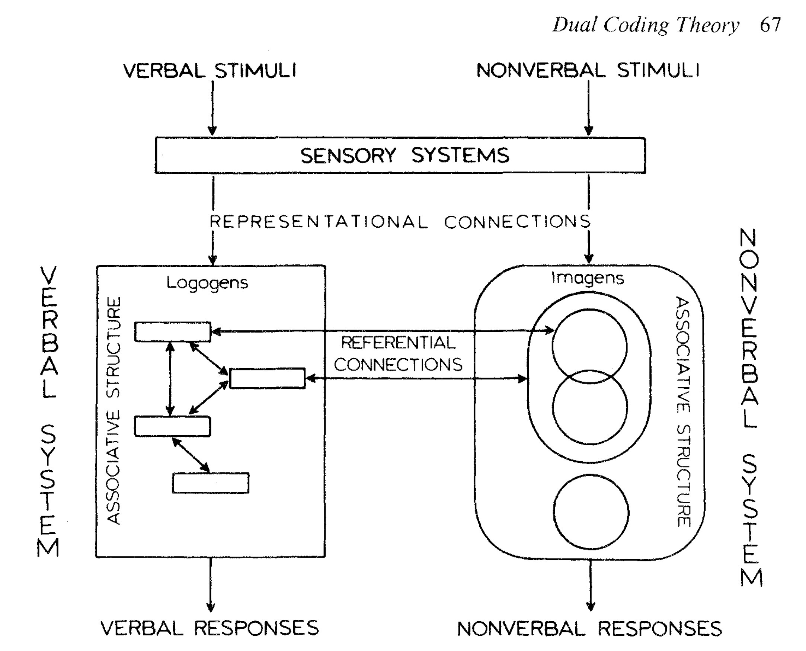

Week 12: Final Projects, Causality and Racecraft
DSAN 5450: Data Ethics and Policy
Spring 2024, Georgetown University
Wednesday, April 10, 2024
Discussing Fairness
Below Expectations |
"This algorithm is unfair" |
| Meets Expectations |
"This algorithm violates the Predictive Parity criterion of fairness when run on this dataset" |
| Exceeds Expectations |
"This algorithm violates the Predictive Parity criterion when run on this dataset, but that’s because [other mitigating factor]. It still satisfies Within-\(\varepsilon\) Predictive Parity, for \(\varepsilon = 0.02\)" |
| Doing Too Much |
All of the above, plus I developed a new better algorithm that is more fair |
Evaluating Policy
| Below Expectations |
"This policy is bad" |
| Meets Expectations |
"This policy is bad bc it's biased towards [group 1], and doesn't take sufficient account of the welfare of [group 2]" |
| Exceeds Expectations |
"This policy is bad bc it's biased towards [group 1], and doesn't take sufficient account of the welfare of [group 2], which violates the Rawlsian notion of what would be chosen by rational agents behind a 'veil of ignorance'" |
| Doing Too Much |
"This policy is bad bc the inferred welfare weights \(\omega_i\) are \(0.1632\) off from the optimal welfare weights \(\omega_i^*\)" |
But First… Phenomenology
- “Objective” account: Roquentin sits down on a bus seat; “Subjective” account:
I lean my hand on the seat but pull it back hurriedly: it exists. This thing I’m sitting on, leaning my hand on, is called a seat. They made it purposely for people to sit on, they took leather, springs and cloth, they went to work with the idea of making a seat and when they finished, that was what they had made. They carried it here, into this car and the car is now rolling and jolting with its rattling windows, carrying this red thing in its bosom. I murmur: “It’s a seat,” a little like an exorcism. But the word stays on my lips: it refuses to go and put itself on the thing. It stays what it is, with its red plush, thousands of little red paws in the air, all still, little dead paws…

“Controlling for” Everything Besides Race


Age Discrimination?


- Based on Lily Hu, What is ‘Race’ in Algorithmic Discrimination on the Basis of Race? - IPAM at UCLA (YouTube)
“Cool Theory, I Guess…”
- “Good luck measuring ideas inside of people’s heads… I’ll be over here measuring real things and doing real data science!” -My Opps


Opening A Big Can Of Worms
- Social interactions among \(t^e_0\), \(t^e_1\), \(t^e_2\)…

Opening A Big Can Of Worms
- Social interactions among \(t^e_0\), \(t^e_1\), \(t^e_2\)…
- Mediated by external things \(o^e_3\) to \(o^e_8\) (giving rise to patterns of interaction)…

Opening A Big Can Of Worms
- Social interactions among \(t^e_0\), \(t^e_1\), \(t^e_2\)…
- Mediated by external things \(o^e_3\) to \(o^e_8\) (giving rise to patterns of interaction)…
- Each person \(x\) forming their own internal representations \(\widetilde{t^x_0}\), \(\widetilde{t^x_1}\), \(\widetilde{t^x_2}\) of one another based on patterns of interaction, then
- Generalizing to an internal representation of a “type of person” \(\widetilde{t^x_9}\)…

Opening A Big Can Of Worms
- Social interactions among \(t^e_0\), \(t^e_1\), \(t^e_2\)
- Mediated by external things \(o^e_3\) to \(o^e_8\) (giving rise to patterns of interaction)
- Each person \(x\) forming their own internal representations \(\widetilde{t^x_0}\), \(\widetilde{t^x_1}\), \(\widetilde{t^x_2}\) based on patterns of interaction, then
- Generalizing to an internal representation of a “type of person” \(\widetilde{t^x_9}\)
- Which they then externalize as \(t^x_9\).
- \(t^0_9\), \(t^1_9\), \(t^2_9\) “congeal” into a shared external representation \(t_9^e\) via social mechanism (discussion, media, culture, propaganda, parenting, religion, education, …) \(\Rightarrow t^e_9\) “reified” (causal effects on \(t_0\), \(t_1\), \(t_2\))